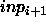

Monte-Carlo learning is an easy way to determine weights and biases of a net. At every learning cycle all weights and biases are chosen by random in the Range

. Then the error is calculated as summed squared error of all patterns. If the error is lower than the previous best error, the weights and biases are stored. This method is not very efficient but useful for finding a good start point for another learning algorithm.